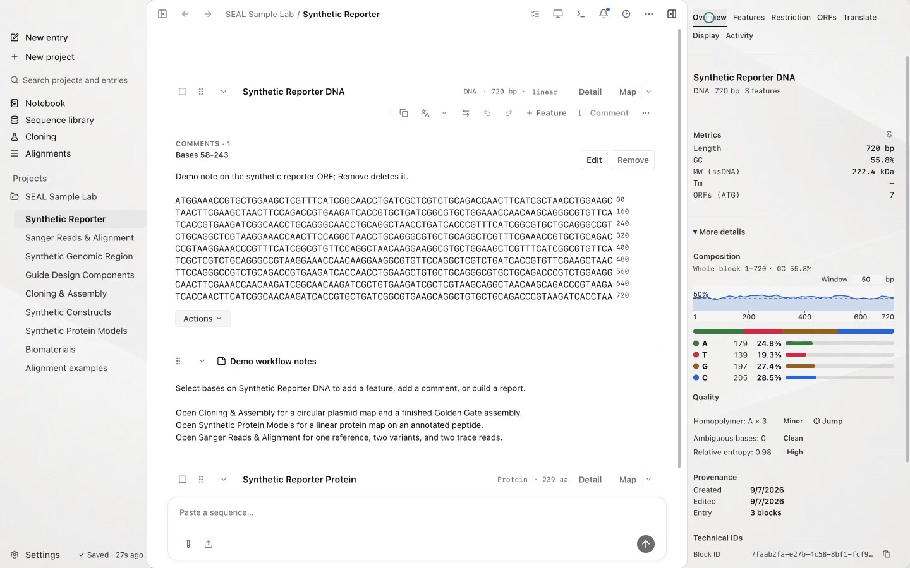
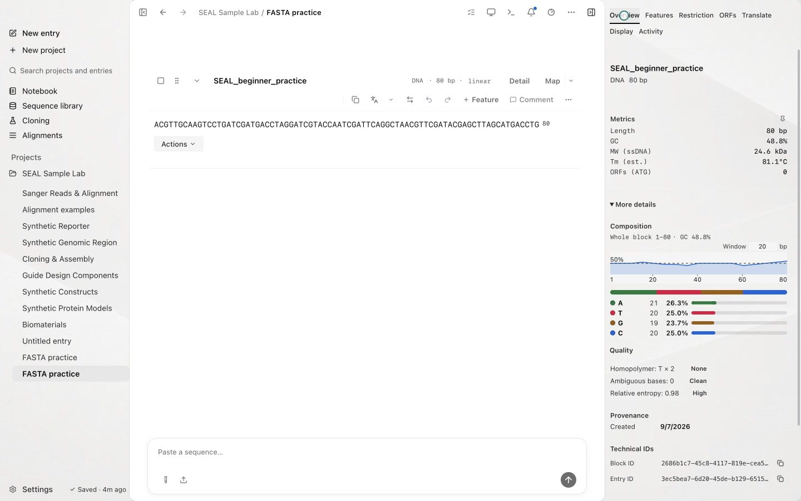
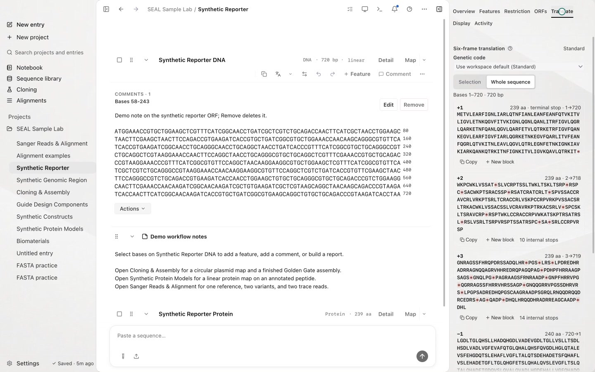
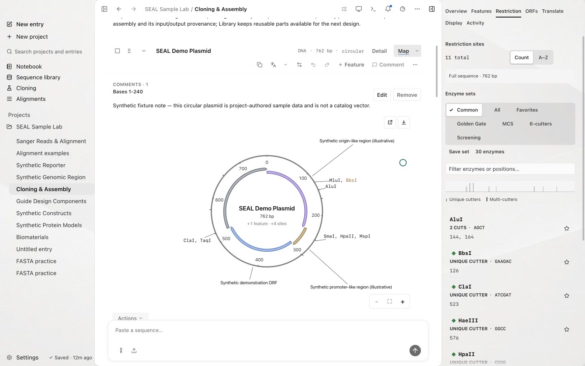
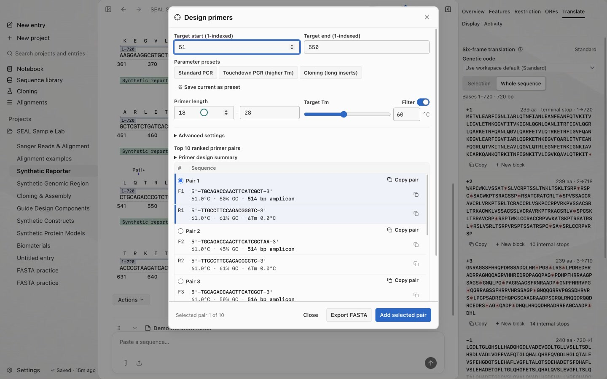
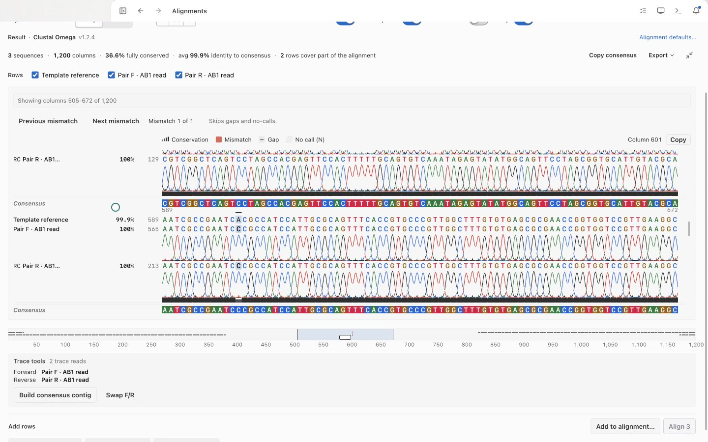
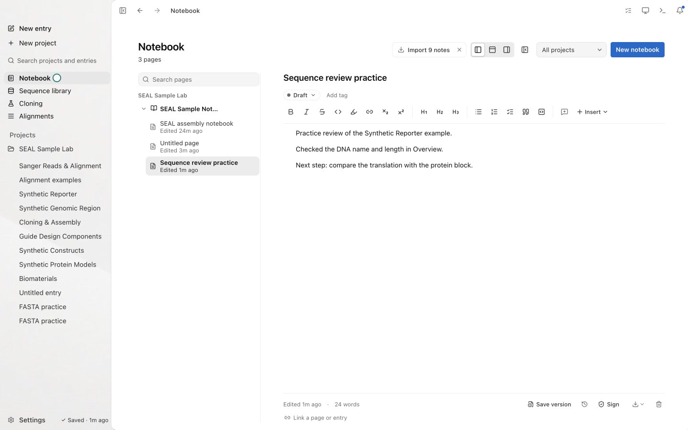
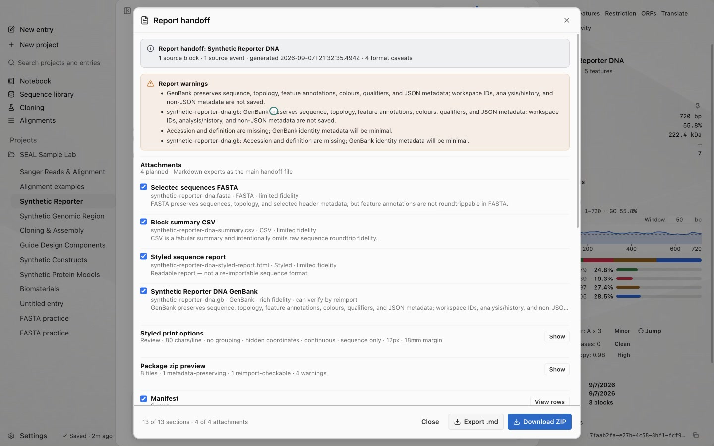

Video tutorials
Screenshots and recordings show the direct edition. Compare editions.
Eight short lessons show how to add sequences, inspect analyses, and keep notes in SEAL. Each recording has captions, a transcript, and written steps.
Install SEAL before starting. The lessons use synthetic sample data and an AI-generated voice. You can pause a video, open it full screen, or follow the written guide at your own pace.
For a tour of the app, watch the SEAL overview. It covers the Sample Lab, sequence analysis, notebook, report exports, and agent setup.
Start here
Begin with Your first workspace, then Add your first sequence. Once you can select a sequence and read the Inspector, choose the analysis you want to try.
Follow a lesson
The full series runs 7 minutes and 59 seconds. Choose a task or follow the lessons in order.

Open your first workspace
Load the sample workspace and find Entries, sequence blocks, and the Inspector.

Add a sequence
Paste a practice FASTA into a new Entry and check the DNA name and length.

Translate and compare reading frames
Compare six frames, show translation beside DNA, and inspect a protein back-translation draft.

Inspect a map and restriction digest
View an annotated plasmid and check the fragments predicted for a chosen enzyme.

Design primers
Open the primer tools and compare candidate sequences and their properties.

Review alignments and Sanger reads
Open a saved alignment, move between mismatches, and inspect chromatogram peaks.

Write notebook notes
Open a notebook page and record a note about the work in your workspace.

Export a report and review Activity
Choose report attachments, download a ZIP, and confirm the completed export in Activity.
Continue with your own work
Import and export explains supported formats. Use Cloning and assembly to plan constructs, or CRISPR guide design to inspect guide candidates.
For automation, start with Agent tools. The CLI reference and MCP reference document the commands available to scripts and coding agents.
Find help
If a step looks different, compare the selected Entry and block with the guide. Use Troubleshooting for app and connection problems, or Settings and backup for workspace and appearance options.